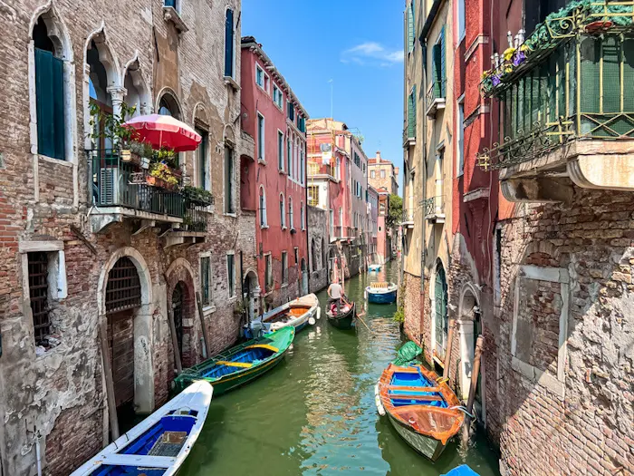

Venice, the capital of the Veneto region in northern Italy, encompasses more than 100 small islands in a lagoon of the Adriatic Sea.

It has no roads, only canals, including the public waterway of
the Grand Canal, lined with
Renaissance and Gothic palaces.
In the central St. Mark's Square stands St. Mark's
Basilica,
with its Byzantine mosaic floor, and the Campanile, overlooking the city's red rooftops.